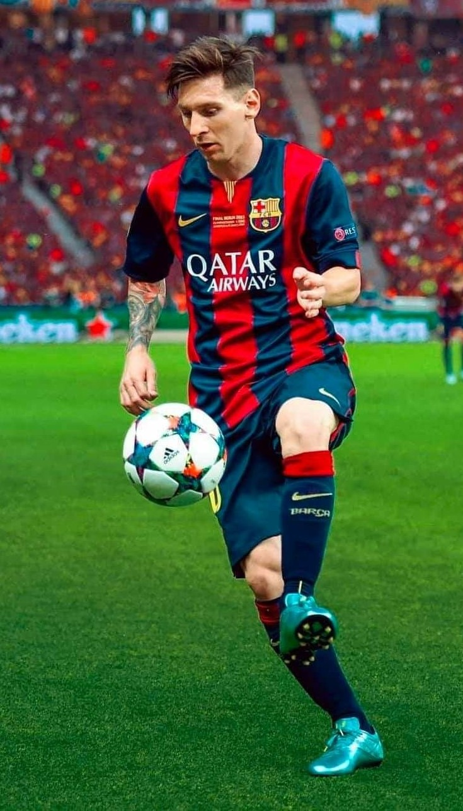
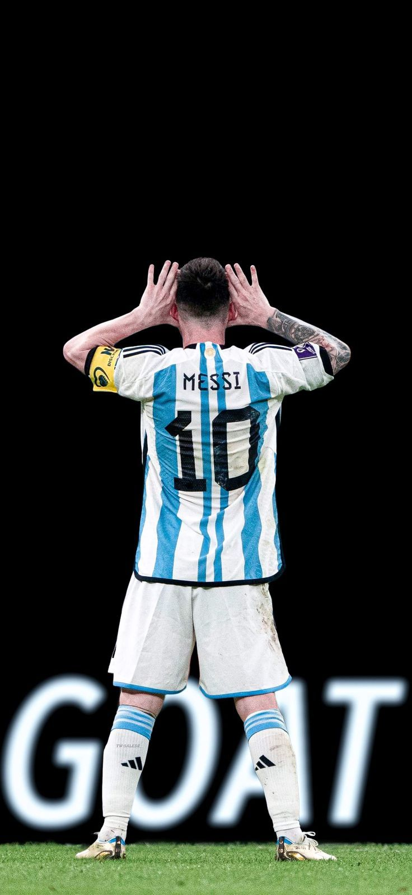
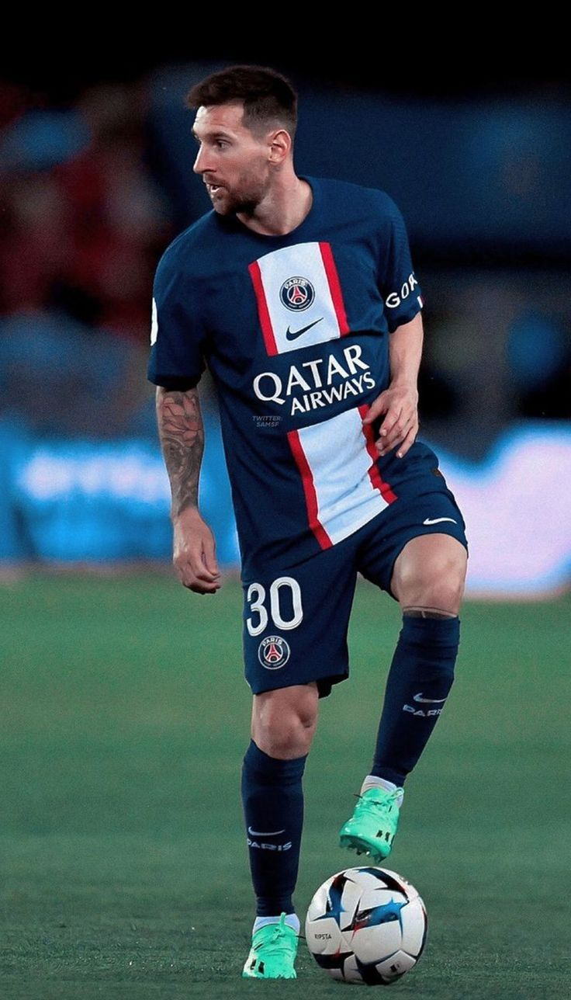

|
 |
 |
 |
Lionel Andrés Messi juga dikenal sebagai Leo Messi,(lahir 24 Juni 1987) adalah seorang pemain sepak bola profesional asal Argentina yang bermain sebagai penyerang untuk klub Ligue 1 Paris Saint-Germain dan merupakan kapten tim nasional Argentina. Sering dianggap sebagai pemain terbaik di dunia dan sering dianggap sebagai pemain terhebat sepanjang masa, Messi telah memenangkan tujuh penghargaan Ballon d'Or, enam Sepatu Emas Eropa, dan pada tahun 2020 dinobatkan sebagai Ballon d'Or Dream Team. Ia menghabiskan seluruh karier profesionalnya bersama Barcelona, di mana ia memenangkan 34 piala, termasuk sepuluh gelar La Liga, tujuh gelar Copa del Rey dan empat Liga Champions UEFA. Seorang pencetak gol yang produktif dan playmaker kreatif, Messi memegang rekor sebagai pencetak gol terbanyak sepanjang masa di La Liga (474 gol), gol terbanyak di La Liga dan Eropa dalam satu musim (50 gol), trigol terbanyak di La Liga (36) dan Liga Champions UEFA (8), serta umpan gol terbanyak di La Liga (192), umpan gol terbanyak La Liga dan Eropa selama satu musim (21)[10] dan umpan gol terbanyak di Copa América (17). Ia telah mencetak lebih dari 750 gol selama karier seniornya untuk klub dan negara, dan gol terbanyak yang pernah dibuat oleh seorang pemain yang bermain hanya untuk satu klub.
Barcelona (2003 – 2021)
Pada usia 16 tahun, empat bulan, dan 23 hari, Messi melakukan debut tim pertamanya ketika ia masuk pada menit ke-75 dalam pertandingan persahabatan melawan Porto asuhan Jose Mourinho pada 16 November 2003.
Untuk mendapatkan pengalaman pertandingan lebih lanjut, Messi bergabung dengan Barcelona C selain Juveniles A, memainkan pertandingan pertamanya untuk tim ketiga pada 29 November. Dia membantu menyelamatkan mereka dari zona degradasi Divisi Tercera.
Selama musim 2004-05, Messi adalah starter dijamin untuk tim B, bermain 17 pertandingan sepanjang kampanye dan mencetak gol pada enam kesempatan.
Saat Messi mempertahankan performa mencetak golnya di paruh kedua musim, tahun 2012 dia memecahkan beberapa rekor lama. Pada tanggal 7 Maret, dua minggu setelah mencetak empat gol dalam pertandingan liga melawan Valencia, ia mencetak lima gol dalam pertandingan babak 16 besar Liga Champions melawan Bayer Leverkusen, pencapaian yang belum pernah terjadi sebelumnya dalam sejarah kompetisi.
Dengan kepergian mantan kapten Andres Iniesta pada Mei 2018, Messi diangkat sebagai kapten baru tim untuk musim berikutnya. Pada 12 Agustus 2018, ia mengangkat gelar pertamanya sebagai kapten Barcelona, Supercopa de Espaa, menyusul kemenangan 2-1 atas Sevilla.
Pada tanggal 1 Juli 2021, Messi menjadi agen bebas setelah kontraknya berakhir, dengan negosiasi kesepakatan baru yang rumit karena masalah keuangan di Barcelona. Pada tanggal 5 Agustus, Barcelona mengumumkan bahwa Messi tidak akan tinggal di klub, meskipun kedua belah pihak mencapai kesepakatan dan akan menandatangani kontrak hari itu. Klub mengutip kendala keuangan dan struktural yang ditimbulkan oleh peraturan La Liga lah yang menjadi alasan kepergian Messi.
PSG (2021 – Sekarang)
Pada 10 Agustus, Messi bergabung dengan klub Prancis Paris Saint-Germain. Dia menandatangani kontrak dua tahun hingga Juni 2023 dengan opsi perpanjangan satu tahun. Messi memilih 30 sebagai nomor skuatnya, sama seperti yang ia kenakan saat remaja saat melakukan debut seniornya untuk Barcelona.
Messi melakukan debutnya untuk klub pada 29 Agustus, masuk sebagai pemain pengganti di babak kedua saat menang 2-0 atas Reims di Ligue 1.
Setelah mencetak 40 gol di level klub dan internasional untuk tahun kalender dan membantu Argentina memenangkan Copa America 2021, Messi menerima rekor Ballon d'Or ketujuh pada 29 November.
Argentina U20 2004 – 2005
Argentina U23 2008
Argentina 2005 – Sekarang
Karena perawakannya yang pendek, Messi memiliki pusat gravitasi yang lebih rendah daripada pemain yang lebih tinggi, yang memberinya kelincahan yang lebih besar, memungkinkan dia untuk mengubah arah lebih cepat dan menghindari tekel lawan.
Kakinya yang pendek dan kuat memungkinkan dia untuk unggul dalam akselerasi pendek sementara kakinya yang cepat memungkinkan dia untuk mempertahankan kendali bola saat menggiring bola dengan kecepatan tinggi.
BARCELONA
PARIS SAINT GERMAIN
Argentina
Argentina U-20
Tim Olimpiade Argentina